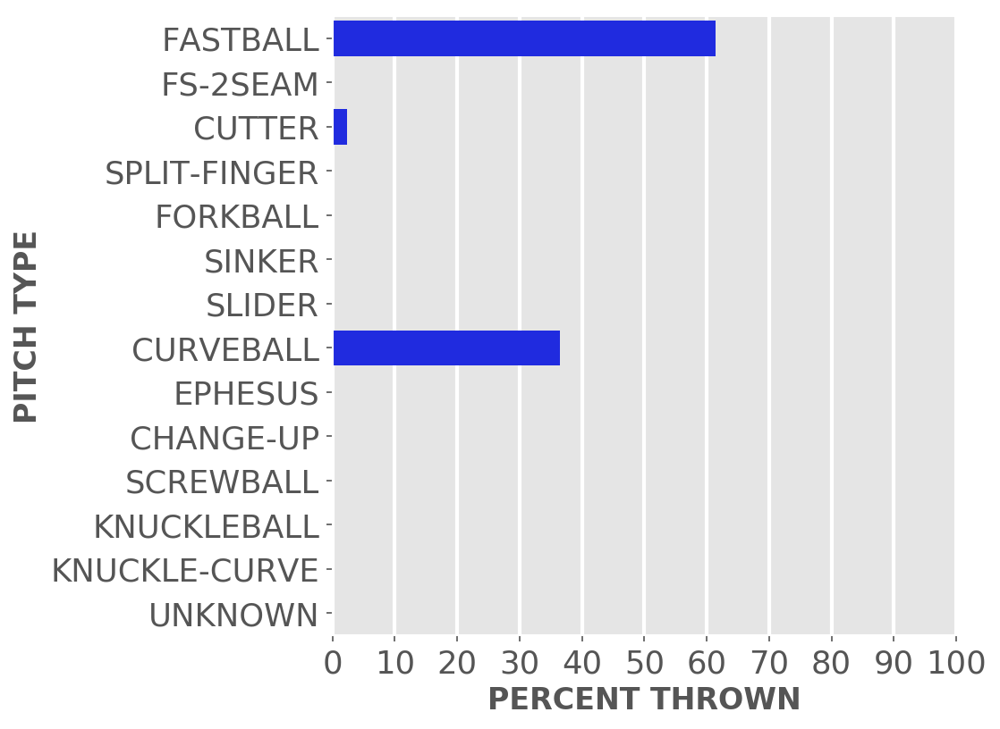
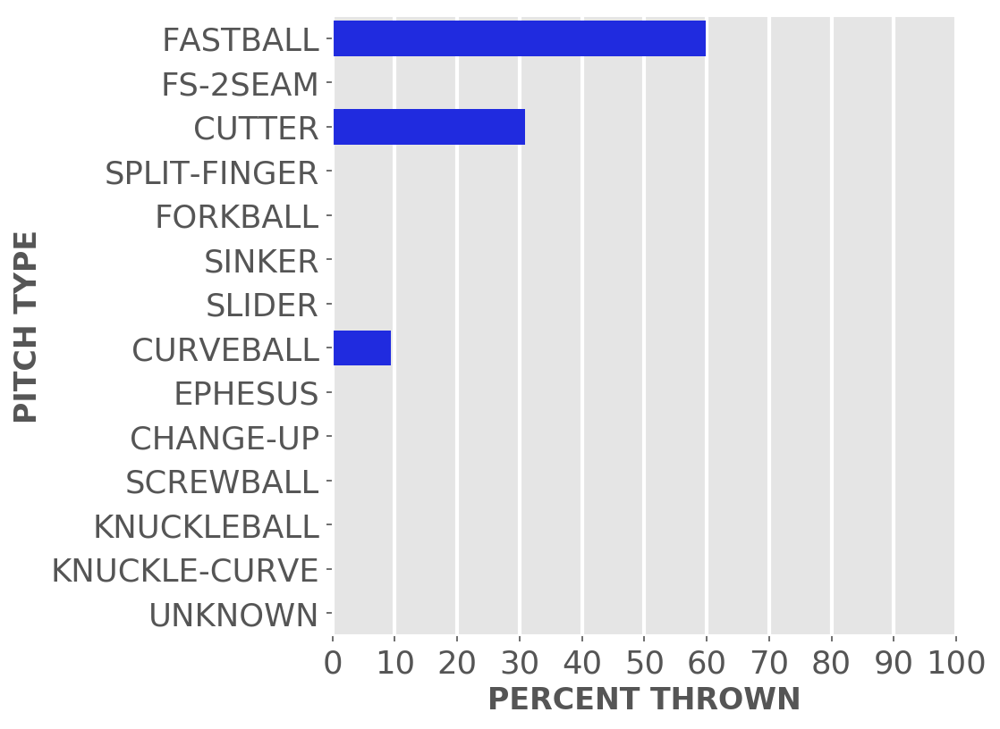
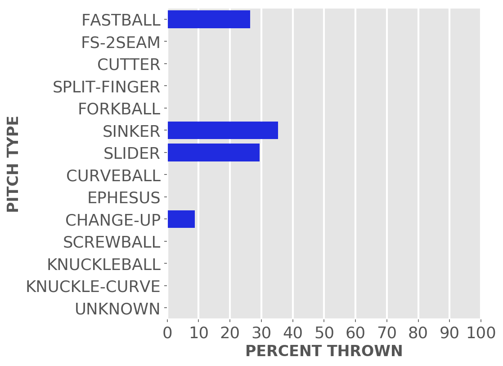

Chicago baseball
Cubs
A little-more-than-casual but not-very-wonky statistical look at the current season
Just enough stats to feed into the anxieties of your typical Cubby fan.
Updated Monday, Aug. 8, at 8:11 a.m. Pybaseball gathers these from Baseball-reference.com.
Games
JUMP TO TOP | BATTERS | PITCHERS
On Sunday, Aug 7, the Cubs lost a day game at home against the Marlins, 0 to 3, in 9 innings. The winning pitcher was Luzardo, losing pitcher was Sampson. Save: Scott.
Next scheduled game: Monday, Aug 8, a game at home with the Nationals.
Summary results by team
| Team | Wins | Loses | Avg. Cubs runs | Avg. runs against |
|---|---|---|---|---|
| Braves | 3 | 3 | 2.5 | 3.33 |
| Brewers | 7 | 6 | 4.08 | 4.46 |
| Cardinals | 4 | 7 | 3.82 | 5.36 |
| Diamondbacks | 3 | 4 | 4.0 | 4.57 |
| Dodgers | 0 | 7 | 2.86 | 6.29 |
| Giants | 1 | 3 | 2.5 | 3.75 |
| Marlins | 2 | 1 | 2.0 | 1.33 |
| Mets | 1 | 3 | 1.75 | 4.0 |
| Orioles | 0 | 3 | 2.0 | 6.67 |
| Padres | 2 | 5 | 4.57 | 7.29 |
| Phillies | 3 | 0 | 8.33 | 2.33 |
| Pirates | 7 | 8 | 5.4 | 3.87 |
| Rays | 1 | 2 | 3.67 | 5.33 |
| Red Sox | 2 | 1 | 3.67 | 3.33 |
| Reds | 4 | 3 | 7.43 | 6.71 |
| Rockies | 2 | 2 | 5.5 | 5.25 |
| White Sox | 1 | 3 | 3.25 | 3.25 |
| Yankees | 0 | 3 | 1.67 | 9.33 |
Batters
JUMP TO TOP | GAMES | PITCHERS
Click the link under a player's name to get up-to-speed on a player at bat.
Willson Contreras #40, C
| Status (A = active) | A |
| Bats/Throws | R/R |
| Plate appearances | 396 |
| At bats | 336 |
| Hits | 85 |
| Home runs | 16 |
| Batting Avg. | 0.253 |

| Runs | 54 |
| RBI | 42 |
| On-base percent | 0.366 |
| Weighted OBP | 0.367 |
| Slugging % | 0.47 |
| Stolen bases | 3 |
| Caught stealing | 2 |
Other measures
| Weighted runs above avg. (wRAA) | 17.9 |
| Runs Above Replacement (RAR) | 27.3 |
| Fielding RAR | -2.3 |
| Wins above replacement (WAR) | 2.8 |
Yan Gomes #7, C
| Status (A = active) | A |
| Bats/Throws | R/R |
| Plate appearances | 190 |
| At bats | 183 |
| Hits | 41 |
| Home runs | 5 |
| Batting Avg. | 0.224 |

| Runs | 15 |
| RBI | 14 |
| On-base percent | 0.247 |
| Weighted OBP | 0.258 |
| Slugging % | 0.344 |
| Stolen bases | 0 |
| Caught stealing | 0 |
Other measures
| Weighted runs above avg. (wRAA) | -8.0 |
| Runs Above Replacement (RAR) | 0.0 |
| Fielding RAR | 2.0 |
| Wins above replacement (WAR) | 0.0 |
Ian Happ #8, LF
| Status (A = active) | A |
| Bats/Throws | S/R |
| Plate appearances | 424 |
| At bats | 372 |
| Hits | 103 |
| Home runs | 9 |
| Batting Avg. | 0.277 |

| Runs | 46 |
| RBI | 46 |
| On-base percent | 0.358 |
| Weighted OBP | 0.345 |
| Slugging % | 0.433 |
| Stolen bases | 6 |
| Caught stealing | 3 |
Other measures
| Weighted runs above avg. (wRAA) | 11.6 |
| Runs Above Replacement (RAR) | 23.7 |
| Fielding RAR | 3.8 |
| Wins above replacement (WAR) | 2.5 |
Jason Heyward #22, CF
| Status (A = active) | D10 |
| Bats/Throws | L/L |
| Plate appearances | 151 |
| At bats | 137 |
| Hits | 28 |
| Home runs | 1 |
| Batting Avg. | 0.204 |

| Runs | 15 |
| RBI | 10 |
| On-base percent | 0.278 |
| Weighted OBP | 0.254 |
| Slugging % | 0.277 |
| Stolen bases | 1 |
| Caught stealing | 0 |
Other measures
| Weighted runs above avg. (wRAA) | -6.9 |
| Runs Above Replacement (RAR) | -3.3 |
| Fielding RAR | -0.3 |
| Wins above replacement (WAR) | -0.3 |
P.J. Higgins #48, C
| Status (A = active) | A |
| Bats/Throws | R/R |
| Plate appearances | 106 |
| At bats | 94 |
| Hits | 27 |
| Home runs | 5 |
| Batting Avg. | 0.287 |

| Runs | 15 |
| RBI | 17 |
| On-base percent | 0.362 |
| Weighted OBP | 0.384 |
| Slugging % | 0.532 |
| Stolen bases | 0 |
| Caught stealing | 0 |
Other measures
| Weighted runs above avg. (wRAA) | 6.3 |
| Runs Above Replacement (RAR) | 5.3 |
| Fielding RAR | -4.1 |
| Wins above replacement (WAR) | 0.5 |
Nico Hoerner #2, SS
| Status (A = active) | A |
| Bats/Throws | R/R |
| Plate appearances | 344 |
| At bats | 322 |
| Hits | 96 |
| Home runs | 6 |
| Batting Avg. | 0.298 |

| Runs | 33 |
| RBI | 34 |
| On-base percent | 0.34 |
| Weighted OBP | 0.328 |
| Slugging % | 0.416 |
| Stolen bases | 12 |
| Caught stealing | 1 |
Other measures
| Weighted runs above avg. (wRAA) | 4.9 |
| Runs Above Replacement (RAR) | 27.6 |
| Fielding RAR | 6.9 |
| Wins above replacement (WAR) | 2.9 |
Nick Madrigal #1, 2B
| Status (A = active) | A |
| Bats/Throws | R/R |
| Plate appearances | 123 |
| At bats | 115 |
| Hits | 26 |
| Home runs | 0 |
| Batting Avg. | 0.226 |

| Runs | 9 |
| RBI | 2 |
| On-base percent | 0.27 |
| Weighted OBP | 0.237 |
| Slugging % | 0.252 |
| Stolen bases | 1 |
| Caught stealing | 0 |
Other measures
| Weighted runs above avg. (wRAA) | -7.2 |
| Runs Above Replacement (RAR) | -2.0 |
| Fielding RAR | 1.4 |
| Wins above replacement (WAR) | -0.2 |
Zach McKinstry #6, SS
| Status (A = active) | A |
| Bats/Throws | L/R |
| Plate appearances | 28 |
| At bats | 25 |
| Hits | 1 |
| Home runs | 1 |
| Batting Avg. | 0.04 |
| Runs | 4 |
| RBI | 2 |
| On-base percent | 0.143 |
| Weighted OBP | 0.148 |
| Slugging % | 0.16 |
| Stolen bases | 0 |
| Caught stealing | 0 |
Other measures
| Weighted runs above avg. (wRAA) | -3.6 |
| Runs Above Replacement (RAR) | -3.0 |
| Fielding RAR | -0.2 |
| Wins above replacement (WAR) | -0.3 |
Christopher Morel #5, CF
| Status (A = active) | A |
| Bats/Throws | R/R |
| Plate appearances | 282 |
| At bats | 251 |
| Hits | 65 |
| Home runs | 9 |
| Batting Avg. | 0.259 |

| Runs | 41 |
| RBI | 29 |
| On-base percent | 0.331 |
| Weighted OBP | 0.339 |
| Slugging % | 0.45 |
| Stolen bases | 9 |
| Caught stealing | 6 |
Other measures
| Weighted runs above avg. (wRAA) | 6.4 |
| Runs Above Replacement (RAR) | 13.0 |
| Fielding RAR | -4.1 |
| Wins above replacement (WAR) | 1.4 |
Rafael Ortega #66, CF
| Status (A = active) | A |
| Bats/Throws | L/R |
| Plate appearances | 298 |
| At bats | 255 |
| Hits | 61 |
| Home runs | 5 |
| Batting Avg. | 0.239 |

| Runs | 26 |
| RBI | 24 |
| On-base percent | 0.328 |
| Weighted OBP | 0.305 |
| Slugging % | 0.357 |
| Stolen bases | 8 |
| Caught stealing | 7 |
Other measures
| Weighted runs above avg. (wRAA) | -1.3 |
| Runs Above Replacement (RAR) | 4.5 |
| Fielding RAR | 3.7 |
| Wins above replacement (WAR) | 0.5 |
Frank Schwindel #18, 1B
| Status (A = active) | A |
| Bats/Throws | R/R |
| Plate appearances | 290 |
| At bats | 269 |
| Hits | 62 |
| Home runs | 8 |
| Batting Avg. | 0.23 |

| Runs | 23 |
| RBI | 36 |
| On-base percent | 0.279 |
| Weighted OBP | 0.28 |
| Slugging % | 0.361 |
| Stolen bases | 0 |
| Caught stealing | 0 |
Other measures
| Weighted runs above avg. (wRAA) | -7.1 |
| Runs Above Replacement (RAR) | -6.2 |
| Fielding RAR | -0.2 |
| Wins above replacement (WAR) | -0.6 |
Seiya Suzuki #27, RF
| Status (A = active) | A |
| Bats/Throws | R/R |
| Plate appearances | 267 |
| At bats | 238 |
| Hits | 59 |
| Home runs | 8 |
| Batting Avg. | 0.248 |

| Runs | 29 |
| RBI | 31 |
| On-base percent | 0.322 |
| Weighted OBP | 0.322 |
| Slugging % | 0.42 |
| Stolen bases | 6 |
| Caught stealing | 2 |
Other measures
| Weighted runs above avg. (wRAA) | 2.4 |
| Runs Above Replacement (RAR) | 6.3 |
| Fielding RAR | -1.2 |
| Wins above replacement (WAR) | 0.7 |
Nelson Velazquez #4, RF
| Status (A = active) | A |
| Bats/Throws | R/R |
| Plate appearances | 94 |
| At bats | 85 |
| Hits | 19 |
| Home runs | 5 |
| Batting Avg. | 0.224 |

| Runs | 14 |
| RBI | 16 |
| On-base percent | 0.298 |
| Weighted OBP | 0.327 |
| Slugging % | 0.459 |
| Stolen bases | 2 |
| Caught stealing | 1 |
Other measures
| Weighted runs above avg. (wRAA) | 1.3 |
| Runs Above Replacement (RAR) | 3.7 |
| Fielding RAR | 0.4 |
| Wins above replacement (WAR) | 0.4 |
Patrick Wisdom #16, 3B
| Status (A = active) | A |
| Bats/Throws | R/R |
| Plate appearances | 411 |
| At bats | 357 |
| Hits | 79 |
| Home runs | 20 |
| Batting Avg. | 0.221 |

| Runs | 53 |
| RBI | 52 |
| On-base percent | 0.317 |
| Weighted OBP | 0.333 |
| Slugging % | 0.451 |
| Stolen bases | 6 |
| Caught stealing | 3 |
Other measures
| Weighted runs above avg. (wRAA) | 7.5 |
| Runs Above Replacement (RAR) | 12.8 |
| Fielding RAR | -6.9 |
| Wins above replacement (WAR) | 1.3 |
Pitchers
Click the link under a player's name to get acquainted with who's on the mound.Click here for a description of these stats and more.
Steven Brault #25, P
| Status (A = active) | D10 |
| Bats/Throws | L/L |
| Wins | 0 |
| Losses | 0 |
| ERA | 0.0 |
| Caught stealing | 0 |
| Complete games | 0 |
| Shutouts | 0 |
| Saves | 0 |
| Blown saves | 0 |
Pitch types

Fastball = Four Seam and Unclassified Fastballs; FS-2seam = Two Seam Fastballs; Ephesuses are a really slow ball
| Average innings pitched | 1.0 |
| Strikeouts per 9 innings | 7.94 |
| Walks per 9 innings | 4.76 |
| Walks, hits per inning (WHIP) | 1.06 |
| Percent left on base | 100.0 |
| Percent first pitch strike | 47.6 |
Other measures
| Avg. run support | 3.0 |
| Opponents batting average | 0.167 |
| Batting avg. on balls in play | 0.231 |
| Fielding independent pitching | 2.94 |
| Win probability added (WPA) | 0.35 |
| Runs above replacement | 0.8 |
| WAR | 0.1 |
Kervin Castro #74, P
| Status (A = active) | A |
| Bats/Throws | R/R |
| Wins | 0 |
| Losses | 1 |
| ERA | 27.0 |
| Caught stealing | 0 |
| Complete games | 0 |
| Shutouts | 0 |
| Saves | 0 |
| Blown saves | 0 |
Pitch types
Fastball = Four Seam and Unclassified Fastballs; FS-2seam = Two Seam Fastballs; Ephesuses are a really slow ball
| Average innings pitched | 0.7 |
| Strikeouts per 9 innings | 16.88 |
| Walks per 9 innings | 13.5 |
| Walks, hits per inning (WHIP) | 3.75 |
| Percent left on base | 23.3 |
| Percent first pitch strike | 52.9 |
Other measures
| Avg. run support | 0.0 |
| Opponents batting average | 0.462 |
| Batting avg. on balls in play | 0.714 |
| Fielding independent pitching | 8.74 |
| Win probability added (WPA) | -0.37 |
| Runs above replacement | -2.0 |
| WAR | -0.2 |
Anderson Espinoza #51, P
| Status (A = active) | A |
| Bats/Throws | R/R |
| Wins | 0 |
| Losses | 1 |
| ERA | 3.09 |
| Caught stealing | 0 |
| Complete games | 0 |
| Shutouts | 0 |
| Saves | 0 |
| Blown saves | 0 |
Pitch types

Fastball = Four Seam and Unclassified Fastballs; FS-2seam = Two Seam Fastballs; Ephesuses are a really slow ball
| Average innings pitched | 2.8 |
| Strikeouts per 9 innings | 10.03 |
| Walks per 9 innings | 7.71 |
| Walks, hits per inning (WHIP) | 1.29 |
| Percent left on base | 100.0 |
| Percent first pitch strike | 38.8 |
Other measures
| Avg. run support | 1.0 |
| Opponents batting average | 0.135 |
| Batting avg. on balls in play | 0.095 |
| Fielding independent pitching | 7.31 |
| Win probability added (WPA) | 0.19 |
| Runs above replacement | -3.9 |
| WAR | -0.4 |
Kyle Hendricks #28, P
| Status (A = active) | D15 |
| Bats/Throws | R/R |
| Wins | 4 |
| Losses | 6 |
| ERA | 4.8 |
| Caught stealing | 16 |
| Complete games | 0 |
| Shutouts | 0 |
| Saves | 0 |
| Blown saves | 0 |
Pitch types

Fastball = Four Seam and Unclassified Fastballs; FS-2seam = Two Seam Fastballs; Ephesuses are a really slow ball
| Average innings pitched | 5.3 |
| Strikeouts per 9 innings | 7.04 |
| Walks per 9 innings | 2.56 |
| Walks, hits per inning (WHIP) | 1.29 |
| Percent left on base | 73.6 |
| Percent first pitch strike | 62.9 |
Other measures
| Avg. run support | 60.0 |
| Opponents batting average | 0.258 |
| Batting avg. on balls in play | 0.282 |
| Fielding independent pitching | 4.82 |
| Win probability added (WPA) | -0.7 |
| Runs above replacement | 4.0 |
| WAR | 0.4 |
Brandon Hughes #47, P
| Status (A = active) | A |
| Bats/Throws | S/L |
| Wins | 1 |
| Losses | 0 |
| ERA | 2.9 |
| Caught stealing | 0 |
| Complete games | 0 |
| Shutouts | 0 |
| Saves | 0 |
| Blown saves | 1 |
Pitch types

Fastball = Four Seam and Unclassified Fastballs; FS-2seam = Two Seam Fastballs; Ephesuses are a really slow ball
| Average innings pitched | 1.1 |
| Strikeouts per 9 innings | 11.32 |
| Walks per 9 innings | 3.19 |
| Walks, hits per inning (WHIP) | 1.06 |
| Percent left on base | 83.3 |
| Percent first pitch strike | 66.9 |
Other measures
| Avg. run support | 8.0 |
| Opponents batting average | 0.193 |
| Batting avg. on balls in play | 0.254 |
| Fielding independent pitching | 3.82 |
| Win probability added (WPA) | 0.67 |
| Runs above replacement | 1.3 |
| WAR | 0.1 |
Wade Miley #20, P
| Status (A = active) | D15 |
| Bats/Throws | L/L |
| Wins | 1 |
| Losses | 0 |
| ERA | 2.84 |
| Caught stealing | 4 |
| Complete games | 0 |
| Shutouts | 0 |
| Saves | 0 |
| Blown saves | 0 |
Pitch types

Fastball = Four Seam and Unclassified Fastballs; FS-2seam = Two Seam Fastballs; Ephesuses are a really slow ball
| Average innings pitched | 4.8 |
| Strikeouts per 9 innings | 5.68 |
| Walks per 9 innings | 3.79 |
| Walks, hits per inning (WHIP) | 1.21 |
| Percent left on base | 75.0 |
| Percent first pitch strike | 62.0 |
Other measures
| Avg. run support | 14.0 |
| Opponents batting average | 0.214 |
| Batting avg. on balls in play | 0.259 |
| Fielding independent pitching | 3.27 |
| Win probability added (WPA) | -0.03 |
| Runs above replacement | 4.1 |
| WAR | 0.4 |
Alec Mills #30, P
| Status (A = active) | D15 |
| Bats/Throws | R/R |
| Wins | 0 |
| Losses | 1 |
| ERA | 9.68 |
| Caught stealing | 2 |
| Complete games | 0 |
| Shutouts | 0 |
| Saves | 0 |
| Blown saves | 0 |
Pitch types

Fastball = Four Seam and Unclassified Fastballs; FS-2seam = Two Seam Fastballs; Ephesuses are a really slow ball
| Average innings pitched | 2.5 |
| Strikeouts per 9 innings | 5.6 |
| Walks per 9 innings | 1.53 |
| Walks, hits per inning (WHIP) | 1.75 |
| Percent left on base | 57.9 |
| Percent first pitch strike | 69.0 |
Other measures
| Avg. run support | 7.0 |
| Opponents batting average | 0.359 |
| Batting avg. on balls in play | 0.35 |
| Fielding independent pitching | 8.04 |
| Win probability added (WPA) | -0.52 |
| Runs above replacement | -5.9 |
| WAR | -0.6 |
Sean Newcomb #15, P
| Status (A = active) | A |
| Bats/Throws | L/L |
| Wins | 0 |
| Losses | 0 |
| ERA | 10.22 |
| Caught stealing | 1 |
| Complete games | 0 |
| Shutouts | 0 |
| Saves | 0 |
| Blown saves | 0 |
Pitch types
Fastball = Four Seam and Unclassified Fastballs; FS-2seam = Two Seam Fastballs; Ephesuses are a really slow ball
| Average innings pitched | 1.5 |
| Strikeouts per 9 innings | 6.57 |
| Walks per 9 innings | 4.38 |
| Walks, hits per inning (WHIP) | 2.19 |
| Percent left on base | 57.0 |
| Percent first pitch strike | 50.8 |
Other measures
| Avg. run support | 12.0 |
| Opponents batting average | 0.368 |
| Batting avg. on balls in play | 0.4 |
| Fielding independent pitching | 6.27 |
| Win probability added (WPA) | -0.35 |
| Runs above replacement | -1.7 |
| WAR | -0.2 |
Michael Rucker #59, P
| Status (A = active) | A |
| Bats/Throws | R/R |
| Wins | 0 |
| Losses | 1 |
| ERA | 4.55 |
| Caught stealing | 0 |
| Complete games | 0 |
| Shutouts | 0 |
| Saves | 0 |
| Blown saves | 0 |
Pitch types

Fastball = Four Seam and Unclassified Fastballs; FS-2seam = Two Seam Fastballs; Ephesuses are a really slow ball
| Average innings pitched | 1.5 |
| Strikeouts per 9 innings | 8.13 |
| Walks per 9 innings | 3.25 |
| Walks, hits per inning (WHIP) | 1.34 |
| Percent left on base | 67.1 |
| Percent first pitch strike | 55.9 |
Other measures
| Avg. run support | 4.0 |
| Opponents batting average | 0.25 |
| Batting avg. on balls in play | 0.3 |
| Fielding independent pitching | 3.8 |
| Win probability added (WPA) | -0.42 |
| Runs above replacement | 1.3 |
| WAR | 0.1 |
Adrian Sampson #41, P
| Status (A = active) | A |
| Bats/Throws | R/R |
| Wins | 0 |
| Losses | 2 |
| ERA | 3.74 |
| Caught stealing | 7 |
| Complete games | 0 |
| Shutouts | 0 |
| Saves | 0 |
| Blown saves | 0 |
Pitch types

Fastball = Four Seam and Unclassified Fastballs; FS-2seam = Two Seam Fastballs; Ephesuses are a really slow ball
| Average innings pitched | 4.8 |
| Strikeouts per 9 innings | 6.65 |
| Walks per 9 innings | 2.08 |
| Walks, hits per inning (WHIP) | 1.2 |
| Percent left on base | 65.6 |
| Percent first pitch strike | 57.5 |
Other measures
| Avg. run support | 9.0 |
| Opponents batting average | 0.247 |
| Batting avg. on balls in play | 0.289 |
| Fielding independent pitching | 3.3 |
| Win probability added (WPA) | -0.2 |
| Runs above replacement | 7.7 |
| WAR | 0.8 |
Frank Schwindel #18, 1B
| Status (A = active) | A |
| Bats/Throws | R/R |
| Wins | 0 |
| Losses | 0 |
| ERA | 18.0 |
| Caught stealing | 0 |
| Complete games | 0 |
| Shutouts | 0 |
| Saves | 0 |
| Blown saves | 0 |
Pitch types

Fastball = Four Seam and Unclassified Fastballs; FS-2seam = Two Seam Fastballs; Ephesuses are a really slow ball
| Average innings pitched | 1.0 |
| Strikeouts per 9 innings | 0.0 |
| Walks per 9 innings | 3.0 |
| Walks, hits per inning (WHIP) | 3.0 |
| Percent left on base | 88.2 |
| Percent first pitch strike | 72.2 |
Other measures
| Avg. run support | 0.0 |
| Opponents batting average | 0.471 |
| Batting avg. on balls in play | 0.308 |
| Fielding independent pitching | 21.45 |
| Win probability added (WPA) | 0.0 |
| Runs above replacement | -2.7 |
| WAR | -0.2 |
Drew Smyly #11, P
| Status (A = active) | A |
| Bats/Throws | L/L |
| Wins | 4 |
| Losses | 6 |
| ERA | 3.97 |
| Caught stealing | 14 |
| Complete games | 0 |
| Shutouts | 0 |
| Saves | 0 |
| Blown saves | 0 |
Pitch types

Fastball = Four Seam and Unclassified Fastballs; FS-2seam = Two Seam Fastballs; Ephesuses are a really slow ball
| Average innings pitched | 4.7 |
| Strikeouts per 9 innings | 7.13 |
| Walks per 9 innings | 2.06 |
| Walks, hits per inning (WHIP) | 1.29 |
| Percent left on base | 76.8 |
| Percent first pitch strike | 69.0 |
Other measures
| Avg. run support | 36.0 |
| Opponents batting average | 0.265 |
| Batting avg. on balls in play | 0.294 |
| Fielding independent pitching | 4.48 |
| Win probability added (WPA) | 0.16 |
| Runs above replacement | 6.9 |
| WAR | 0.7 |
Justin Steele #35, P
| Status (A = active) | A |
| Bats/Throws | L/L |
| Wins | 4 |
| Losses | 7 |
| ERA | 3.67 |
| Caught stealing | 20 |
| Complete games | 0 |
| Shutouts | 0 |
| Saves | 0 |
| Blown saves | 0 |
Pitch types

Fastball = Four Seam and Unclassified Fastballs; FS-2seam = Two Seam Fastballs; Ephesuses are a really slow ball
| Average innings pitched | 4.8 |
| Strikeouts per 9 innings | 9.13 |
| Walks per 9 innings | 4.05 |
| Walks, hits per inning (WHIP) | 1.41 |
| Percent left on base | 68.7 |
| Percent first pitch strike | 59.5 |
Other measures
| Avg. run support | 49.0 |
| Opponents batting average | 0.245 |
| Batting avg. on balls in play | 0.315 |
| Fielding independent pitching | 3.34 |
| Win probability added (WPA) | -0.03 |
| Runs above replacement | 18.6 |
| WAR | 2.0 |
Marcus Stroman #0, P
| Status (A = active) | A |
| Bats/Throws | R/R |
| Wins | 3 |
| Losses | 5 |
| ERA | 4.0 |
| Caught stealing | 14 |
| Complete games | 0 |
| Shutouts | 0 |
| Saves | 0 |
| Blown saves | 0 |
Pitch types

Fastball = Four Seam and Unclassified Fastballs; FS-2seam = Two Seam Fastballs; Ephesuses are a really slow ball
| Average innings pitched | 5.3 |
| Strikeouts per 9 innings | 8.23 |
| Walks per 9 innings | 2.18 |
| Walks, hits per inning (WHIP) | 1.14 |
| Percent left on base | 69.0 |
| Percent first pitch strike | 62.7 |
Other measures
| Avg. run support | 35.0 |
| Opponents batting average | 0.235 |
| Batting avg. on balls in play | 0.275 |
| Fielding independent pitching | 3.76 |
| Win probability added (WPA) | 0.21 |
| Runs above replacement | 10.6 |
| WAR | 1.1 |
Keegan Thompson #71, P
| Status (A = active) | A |
| Bats/Throws | R/R |
| Wins | 8 |
| Losses | 5 |
| ERA | 3.48 |
| Caught stealing | 14 |
| Complete games | 0 |
| Shutouts | 0 |
| Saves | 0 |
| Blown saves | 0 |
Pitch types

Fastball = Four Seam and Unclassified Fastballs; FS-2seam = Two Seam Fastballs; Ephesuses are a really slow ball
| Average innings pitched | 4.2 |
| Strikeouts per 9 innings | 8.03 |
| Walks per 9 innings | 3.0 |
| Walks, hits per inning (WHIP) | 1.27 |
| Percent left on base | 75.0 |
| Percent first pitch strike | 57.5 |
Other measures
| Avg. run support | 46.0 |
| Opponents batting average | 0.247 |
| Batting avg. on balls in play | 0.297 |
| Fielding independent pitching | 3.98 |
| Win probability added (WPA) | 0.62 |
| Runs above replacement | 11.5 |
| WAR | 1.2 |
Erich Uelmen #46, P
| Status (A = active) | A |
| Bats/Throws | R/R |
| Wins | 0 |
| Losses | 1 |
| ERA | 4.76 |
| Caught stealing | 0 |
| Complete games | 0 |
| Shutouts | 0 |
| Saves | 0 |
| Blown saves | 0 |
Pitch types
Fastball = Four Seam and Unclassified Fastballs; FS-2seam = Two Seam Fastballs; Ephesuses are a really slow ball
| Average innings pitched | 1.0 |
| Strikeouts per 9 innings | 9.53 |
| Walks per 9 innings | 4.76 |
| Walks, hits per inning (WHIP) | 1.24 |
| Percent left on base | 81.4 |
| Percent first pitch strike | 59.3 |
Other measures
| Avg. run support | 2.0 |
| Opponents batting average | 0.19 |
| Batting avg. on balls in play | 0.214 |
| Fielding independent pitching | 6.46 |
| Win probability added (WPA) | -0.39 |
| Runs above replacement | -1.4 |
| WAR | -0.1 |
Rowan Wick #50, P
| Status (A = active) | A |
| Bats/Throws | L/R |
| Wins | 3 |
| Losses | 5 |
| ERA | 4.23 |
| Caught stealing | 0 |
| Complete games | 0 |
| Shutouts | 0 |
| Saves | 4 |
| Blown saves | 2 |
Pitch types

Fastball = Four Seam and Unclassified Fastballs; FS-2seam = Two Seam Fastballs; Ephesuses are a really slow ball
| Average innings pitched | 1.0 |
| Strikeouts per 9 innings | 8.87 |
| Walks per 9 innings | 4.23 |
| Walks, hits per inning (WHIP) | 1.72 |
| Percent left on base | 70.4 |
| Percent first pitch strike | 57.5 |
Other measures
| Avg. run support | 22.0 |
| Opponents batting average | 0.303 |
| Batting avg. on balls in play | 0.38 |
| Fielding independent pitching | 3.78 |
| Win probability added (WPA) | -0.07 |
| Runs above replacement | 2.4 |
| WAR | 0.3 |
JUMP TO TOP